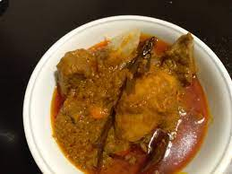

Palm Butter

Description
Is a delectable West
African delicacy that showcases the rich and creamy flavors of palm fruit. This
traditional dish is popular in countries such as Nigeria, Ghana, and Sierra Leone.
The vibrant red soup is made by extracting the rich pulp from palm fruits, which
is then cooked with an array of ingredients such as meat or fish, vegetables, and
aromatic spices. The natural oils from the palm fruit give the soup its
distinctively smooth and velvety texture, while the combination of flavors from
the ingredients creates a harmonious and satisfying taste experience. Served
with a side of fufu, rice, or other starchy accompaniments, palm butter dish
is a culinary treasure that embodies the warmth, richness, and cultural
heritage of West Africa.
Ingredients
- Palm fruit concentrate or palm nut pulp: This is the primary ingredient that
gives the dish its distinctive flavor and color. Palm fruit concentrate can
be found in African or specialty grocery stores.
- Protein: You can use various options such as beef, chicken, fish, or seafood
like shrimp or crayfish. These add depth and richness to the soup.
- Aromatics: Onions, garlic, and ginger are commonly used aromatics that provide
a savory base for the soup.
- Vegetables: Popular vegetables used in palm butter include spinach, bitter leaf,
pumpkin leaves, or other leafy greens. These add freshness and nutritional
value to the dish.
- Seasonings and spices: Common seasonings and spices include stock cubes or
bouillon powder, salt, pepper, and optional spices like crayfish, dried fish,
or chili peppers for extra flavor and heat.
- Palm oil: While palm oil is already present in the palm fruit concentrate, some
recipes call for additional palm oil to enhance the richness of the soup.
- Water or broth: This is used to dilute the palm fruit concentrate and achieve
the desired consistency of the soup.
Steps
- Prepare the protein: If using meat or poultry, cut it into bite-sized pieces
and season with salt and pepper. If using fish or seafood, clean and season
it accordingly. Set aside.
- Blend the aromatics: In a blender or food processor, blend onions, garlic,
and ginger until they form a smooth paste. Set aside.
- Prepare the palm fruit concentrate: If using palm nut pulp, extract the pulp
from the palm fruits by boiling them in water until they soften. Remove the
pulp from the fruits and blend or pound it to obtain a smooth paste. If using
palm fruit concentrate, dilute it with water or broth to achieve the desired
consistency.
- Cook the protein: In a large pot or saucepan, heat some palm oil over medium heat.
Add the seasoned protein and cook until it is browned or sealed on all sides. Remove
the protein from the pot and set it aside.
- Sauté the aromatics: In the same pot, add the blended aromatics and sauté
until they become fragrant and lightly golden.
- Add the palm fruit concentrate: Pour the palm fruit concentrate into the pot
with the sautéed aromatics and stir to combine. Bring the mixture to a simmer
and let it cook for a few minutes to allow the flavors to meld together.
- Add the protein and vegetables: Return the cooked protein to the pot and stir
it into the palm fruit mixture. Add the vegetables of your choice and mix well.
If using leafy greens like spinach or bitter leaf, add them towards the end of
the cooking process to retain their freshness and vibrant color.
- Season and simmer: Season the soup with stock cubes or bouillon powder, salt,
pepper, and any other desired spices or seasonings. Add water or broth to
achieve the desired consistency of the soup. Reduce the heat to low and let
the soup simmer for about 30 minutes to an hour, allowing the flavors to
develop and the vegetables to cook through.
- Adjust the flavors: Taste the soup and adjust the seasonings if needed.
You can add more salt, pepper, or spices according to your preference.
- Serve: Palm butter is traditionally served with a side of fufu, pounded yam,
rice, or any other starchy accompaniment. Ladle the soup into bowls or plates,
making sure to include a generous amount of protein and vegetables in each
serving.